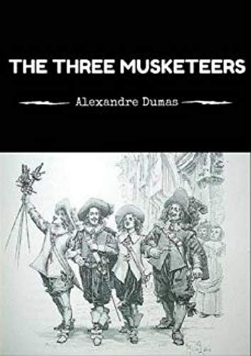

"The Three Musketeers"
- Read on 2012-04-01
- Rating: ️️️️️
- Format: 🎧 (23 hours 32 minutes)
What a fun story, and a fascinating time period. I wonder if the hotheadedness that these four boys/men display (especially D'Artagnan) could be even remotely possible. I really enjoy the way Dumas intertwines his stories to make you unable to guess what will happen next. Additionally, unlike Victor Hugo (at least, in Les Misérables), he doesn't bore you with excessive details about supporting trivialities. My favorite Dumas book remains The Count of Monte Cristo.
- Prior: The Civil War, Vol. 1
- Next: Kill Shot